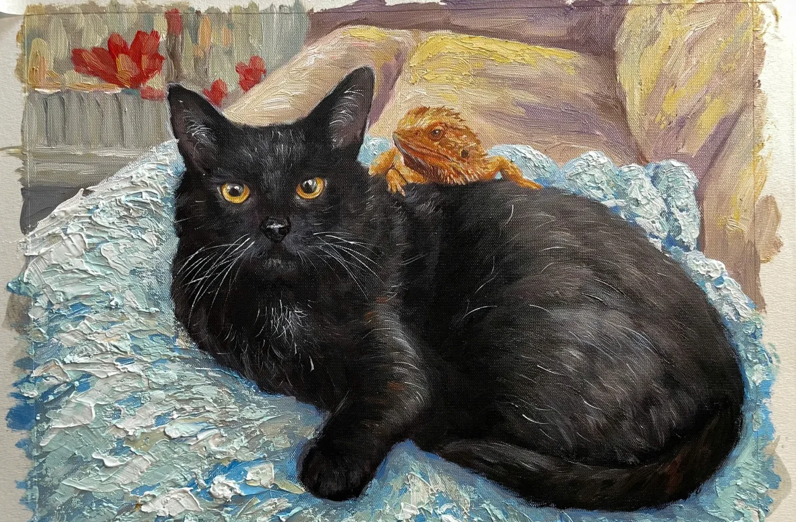

More than
a portrait.
A presence.
For the little souls who make a house feel like home. Original oil paintings, created entirely by hand from the photographs you hold dear.
COMMISSION YOUR PORTRAITSome companions are simply impossible to forget. We create original oil portraits to celebrate the details that make them unforgettable.
Not printed.
Not generated.
Painted, patiently.
Every gesture of the brush, every layered colour, every familiar expression. A one-of-a-kind painting made to be lived with for years to come.
DISCOVER OUR PROCESS
It's their
story, after all.
From a playful glance to a quiet moment, we work from your favourite photographs to honour what makes them yours.
MAKE IT PERSONALChoose
Find the right size and composition for your companion.
Share
Send photographs and the details that make them unique.
Treasure
Your original painting is made by hand and carefully prepared for delivery.
A little more clarity.
Is this an original oil painting or a digital print?
Every commissioned portrait is painted by hand in oils on canvas. It is not a digital print.
Can you paint from my own photograph?
Yes. Your favourite photographs are the starting point for your custom portrait. We can discuss which image will work best.
Can I include more than one pet?
Yes. Choose the number of pets in the commission form to see the available options and estimated price.
Do you ship internationally?
We welcome international enquiries. Shipping eligibility, timing and any applicable import charges are confirmed for your destination before payment.
Can I ask a question before ordering?
Of course. Use our contact form and we'll reply by email to discuss your portrait.